什么？神仙爱情？| Pixy Liao 「艺术访谈」
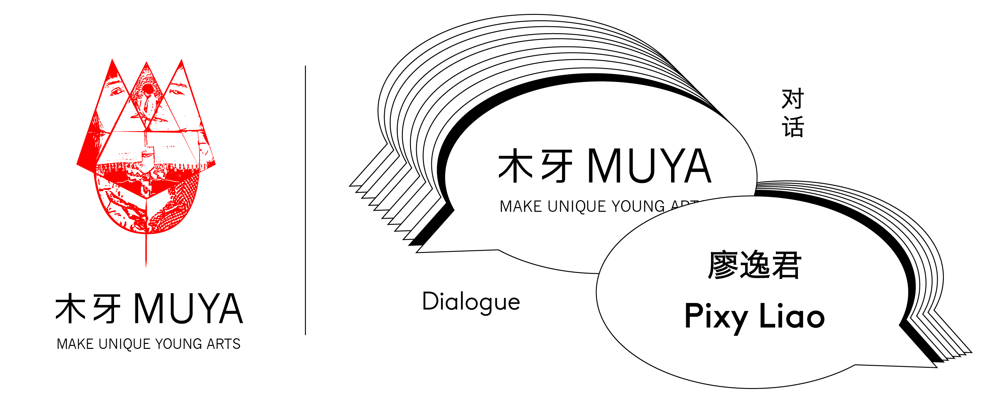欢迎来到木牙Make Unique Young Arts，来和木牙MUYA一起过情人节来啦！！❤️❤️❤️❤️
爱情作为这个世界上神秘又无法用文字定义的感受，没有被时间的杀戮磨灭而是一路被保留完整的来到了21世纪。
As a mysterious and indefinable feeling in this world, love has not been killed by time, but has been kept intact all the way to the 21st century.
当艺术和爱情融合在一块时两种最奇妙的事物产生了神奇的化学反应。而今天我们有幸邀请 Pixy Liao到来到木牙MUYA和我们聊聊艺术家的爱情和其他人有什么区别？如何在原有的基础上不断的再创造他们的爱情，他们又是如何将这样的关系延续到他们的作品的呢～
When art and love come together, there's a magical chemistry between two of the most wonderful things. And today we are honored to have Pixy Liao come to MUYA and talk to us about how the love of artists is different from other people? How do they constantly recreate their love on the basis of the original, and how do they continue this relationship to their works.
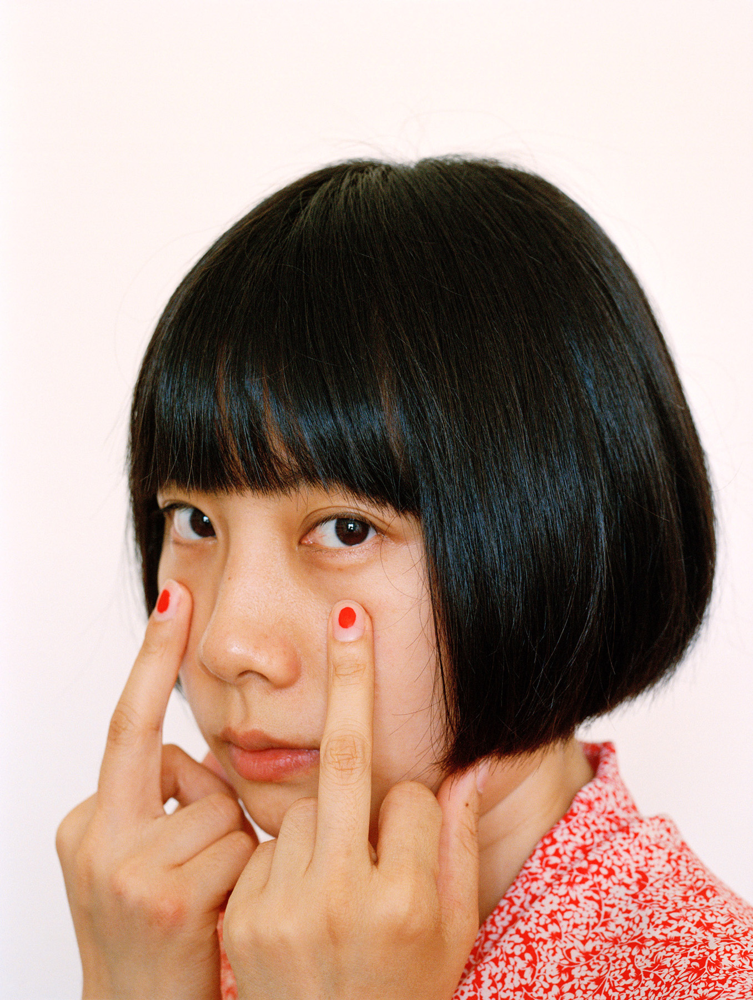
廖逸君，出生于上海，毕业于美国孟菲斯大学摄影硕士学位。现居纽约。她的长期摄影项目“实验性关系”挑战了传统的性别观念。女性身份也是她其他影像和雕塑作品的主题。她的作品曾在阿尔勒国际摄影节、亚洲协会休斯顿分馆、澳大利亚悉尼国家美术馆、纽约博物馆等展出。
Pixy Liao. Born and raised in Shanghai, China, Pixy Liao is an artist currently resides in Brooklyn, NY. Her long-term photographic project, “Experimental Relationships”, challenges traditional notions of gender. Femininity is also the subject of her other photographs and sculptures. Liao has participated in exhibitions and performances internationally, including the Rencontres d’Arles in Arles (France); Asia Society (Houston); National Gallery of Australia (Sydney); the Museum of Sex (New York); UCCA Center for Contemporary Art (Beijing), etc.
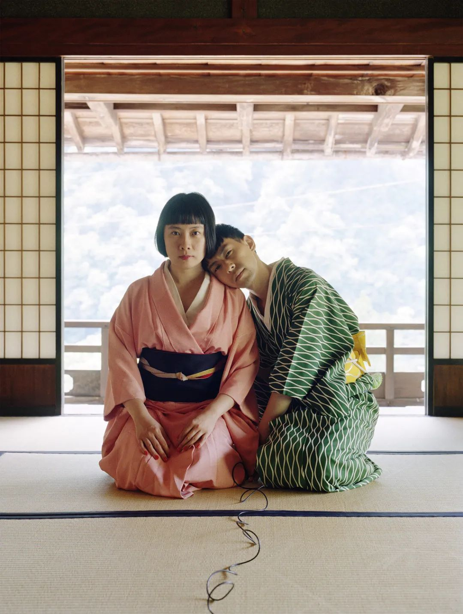

当一个在中国长大的女人，我曾经以为我只能爱一个比我年长，更成熟的人，他可以成为我的保护者和指导者。然后我遇到了我现在的男朋友莫罗。由于他比我小5岁，我觉得整个人际关系的概念一直在改变。我成为了一个拥有更多权威和权力的人。我的一个男性朋友甚至质疑我如何才能像男人选择女朋友那样选择男朋友。我想：“That’s exactly what I’m doing, & why not!”
As a woman growing up in China, I used to think that I could only love an older, more mature man who could be my protector and mentor. Then I met my current boyfriend, Mauro. Since he's five years younger than me, I feel like the whole concept of relationships is changing all the time. I became a person with more authority and power. One of my male friends even questioned how I could choose a boyfriend the way a man chooses a girlfriend. I thought, "That's exactly what I'm doing, & why not!"
我开始尝试这种关系。我会为莫罗和我在照片中设置各种情况。我的照片探讨了异性恋关系的其他可能性。他们质疑异性恋关系的规范。如果男人和女人交换性角色和权力角色会怎样？因为我的男朋友是日本人，而我是中国人，所以还描述了一种恋爱关系。
I began to experiment with this relationship. I'll set up various situations for Mauro and me in the photo. My photographs explore other possibilities of heterosexual relationships. They question the norms of heterosexual relationships. What if men and women swapped sexual and power roles? Since my boyfriend is Japanese and I am Chinese, it also describes a love relationship.
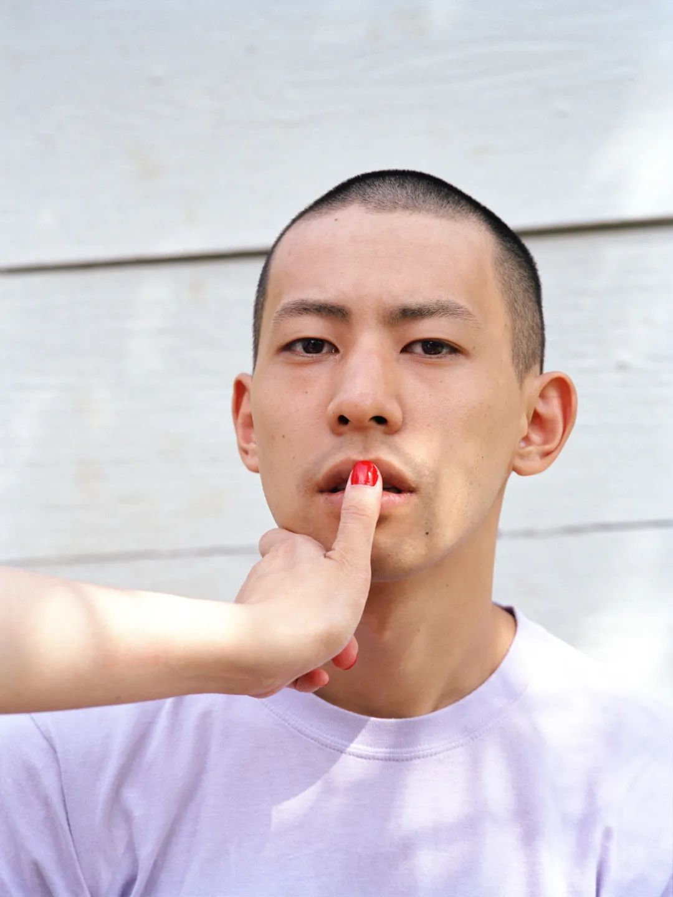

➤ 木牙MUYA: 首先要恭喜Pixy结婚了！永远に爱し合い、美しい人生を共に！关于婚姻大家有着许多不同的想法，理解和感悟。对于Pixy来说是怎么理解婚姻的呢？是否会因此开始拍摄更多类似于「New Wife, Old House」的作品？或者说以新的角度来进行些更加有趣的尝试？
First of all, congratulations to Pixy on getting married! There are many different ideas, understandings and inspirations about marriage. What does marriage mean for Pixy? Will you start shooting more projects like "New Wife, Old House"? Or do something more interesting from a new Angle?
Pixy Liao: 谢谢！其实我们已经结婚很多很多年啦。如果按我们的本意，是不需要结婚的。我一直认为两个人在一起纯粹是应该出于感情而非用法律模式固定下来。但是因为我们两人是不同国籍的人生活在美国，为了更加长久的生活在一起，婚姻是必须的。但是结婚后，我的确感觉到了两个人的关系变化，一种更加包容对方的关系而不再是两个独立体。去年我们在MORO外婆家找到了一些他外婆写的短诗，其中一首给我留下了深刻的印象，“我的丈夫还不习惯用割草机，清晨的阳光照在他汗湿的背上”。这首诗非常有画面感，让我好像看到了他外婆当时看到的场景。我和Moro在拍摄过程中，也不知不觉受了这首诗的影响，好像化身成了当年的外公外婆，一起在这老房子里渡过一生。这是一种略带凄美但是又让人坦然接受的人生。这组作品「New Wife, Old House」 就是在这么一个特定的场景中诞生的。
Thank you very much! We've been married for many, many years. If we had our way, we wouldn't have to get married. I have always believed that two people should be together purely out of affection and not in a legal pattern. But since we are two people of different nationalities living in the United States, marriage is necessary to live together for a longer time. But after I got married, I felt a change in the relationship between the two of us, a more inclusive relationship than two separate bodies.
We found some short poems written by Moro's grandmother at her house last year. One that stuck with me was, "My husband is still unaccustomed to using the lawnmower, the morning sun on his sweaty back." The poem is very pictorial, and it reminds me of the scene his grandmother saw. Moro and I were also influenced by this poem when we were shooting. It was like we were our grandparents and we spent our whole life together in this old house. This is slightly poignant but also lets people accept life.「New Wife, Old House」 was born out of this particular scenario.
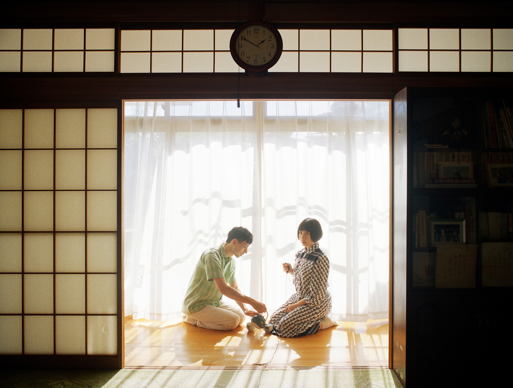
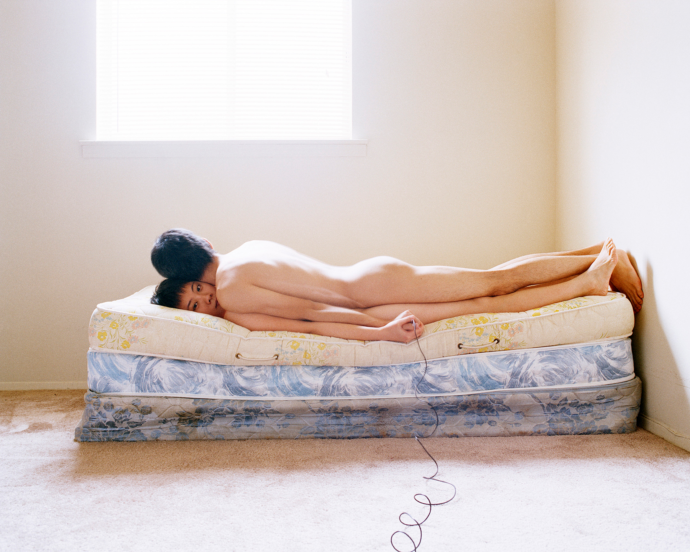
➤ 木牙MUYA: 与其他的恋人不同的是Pixy与男盆友Moro的关系是特别的，你们即是恋人也是合作共同体。在这样的关系下的日常是否会更加的和谐或者说这样的关系有没有让Pixy领悟但一些恋人间微妙的小道理？
Unlike many other lovers, Pixy's relationship with her boyfriend Moro is special. You are both lovers and co-operative. Does everyday life in such a relationship become more harmonious, or does the relationship give Pixy some insight into the subtleties between lovers?
Pixy Liao: 我和Moro的关系一直是恋人关系外还有一层合作关系，无论是在我的艺术创作中还是在他的音乐创作中。我觉得这种合作关系在多数情况下，是有利于维持长期的恋爱关系的。合作关系比恋爱关系更加讲究实用性和磨合性。我们的关系在不断的合作中得到磨炼，变得更加了解对方和信任对方。而长期的合作也一直在给我们的关系中注入新鲜感。唯一需要注意的是，在合作的时候必须更多考虑对方的感受，毕竟这个合作伙伴还是你的生活伙伴，不能因为工作而得罪对方，否则代价太大。
My relationship with Moro has always been a partnership beyond the romantic relationship, both in my art and in his music. I think this kind of partnership, in most cases, is suitable for long-term relationships. Partnerships are more practical and adaptable than romantic relationships. Our relationship has been tempered by constant cooperation, and we have grown to know and trust each other better. And long-term cooperation has always injected freshness into our relationship. The only thing we need to pay attention to is that we must consider each other's feelings more when cooperating. After all, this partner is still your life partner. We can't offend each other because of work, otherwise it will cost us too much.
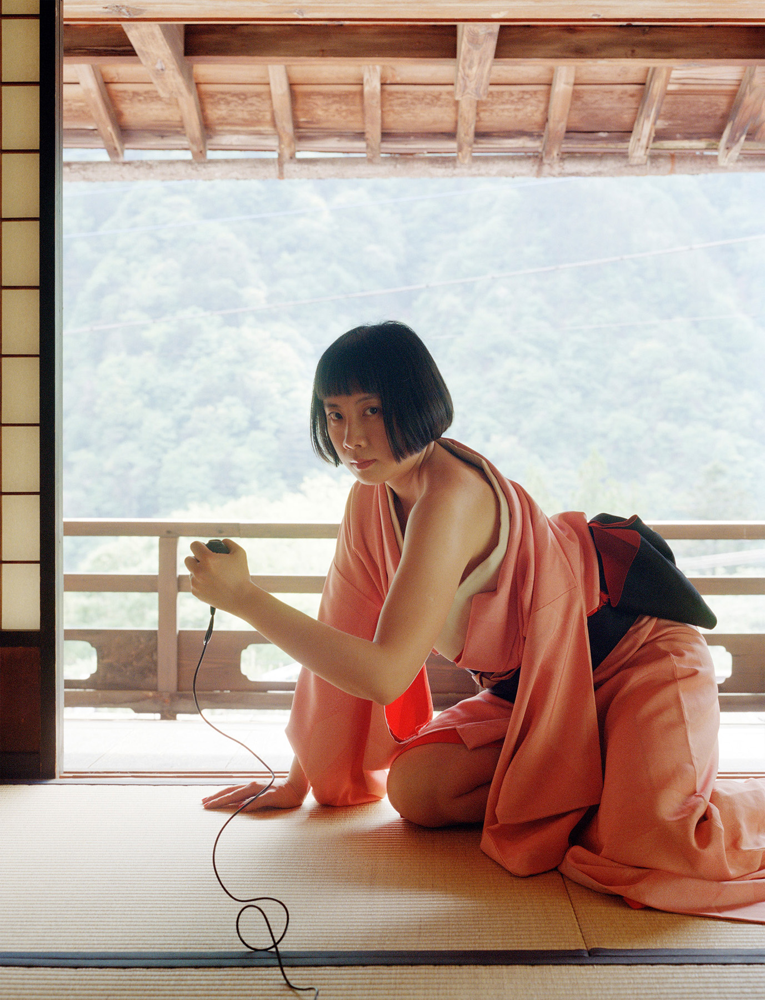
➤ 木牙MUYA: 对于任航的作品，可以聊聊你对于他作品的看法吗?
Can you talk about your opinion of Ren Hang and his works?
Pixy Liao: 我非常喜欢任航的作品，很可惜他过早的离开了我们。我一直觉得任航是我们这一代中最独特的摄影师/艺术家之一。他的强烈的个人风格影响了很多的年轻摄影师，但是他又是不可复制的。我觉得任航的作品的成功之处在于他超于常人的创作激情和独特的个人品味。
I like Ren Hang's works very much. It's a pity that he left us too early. I have always felt that Ren Hang is one of our generation's most unique photographers/artists. His healthy personal style has influenced many young photographers, but he is unrepeatable. Ren Hang's works' success lies in his extraordinary creative passion and unique personal taste.
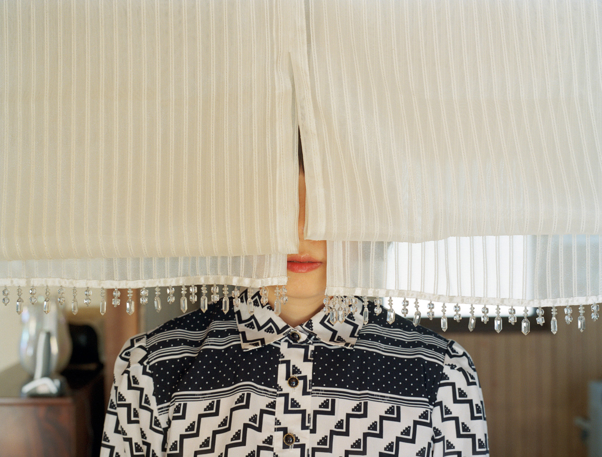
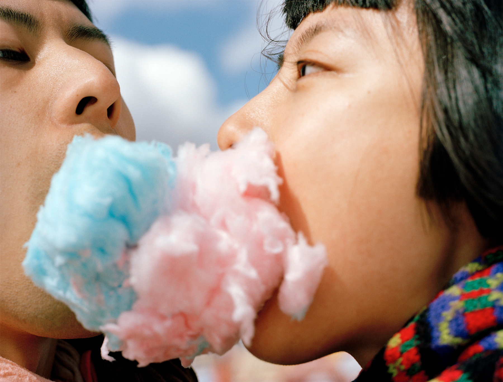
➤ 木牙MUYA: Pixy Liao作为一名摄影师兼艺术家，Pixy日常的一天是如何度过的呢？作为艺术家的你又是如何维持这些开销的呢？
How does Pixy Liao, a photographer and artist, spend your day? How do you, as an artist, make ends meet?
Pixy Liao: 我的一天也许和任何一个人的一天没有很大的区别。我一年中创作的时间是很短的，但又是高强度的，可能是每几个月中就那么几天真的是在努力创作。其余大部分时间我都在放养自己，让自己慢慢培养新的想法。我是到了最近两三年才可以靠艺术为生，在之前我也需要打零工或者接商业的拍摄来谋生和支持艺术创作。
My day is probably not very different from anyone else's day. I create for a brief period in a year, but it's very intense, maybe just a few days every few months, and I work hard at it. I spent most of my time nurturing myself, allowing myself to develop new ideas slowly. It was only in the last two or three years that I could make a living on art. Before that, I also needed to do odd jobs or take commercial shoots to make a living and support artistic creation.
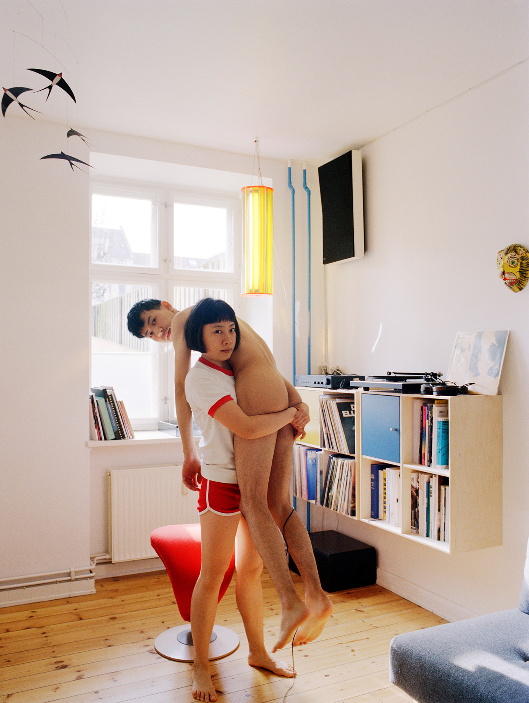
➤ 木牙MUYA: 现在线上交流如此之多，Pixy有没有想过利用网络来完成一组摄影作品，或者说和Moro分开线上创作？
With so much online communication, has Pixy ever thought about using the Internet to create a group of photographs or work online separately from Moro?
Pixy Liao: 可能在展示上会考虑做网上展览。我除了现在的前波网上展览外，7月份我做过另一个网上展览“Choose Your Own Adventure” 自己很喜欢。它是以开放式侦探小说为灵感做的，每一个观众可以自己选择如果观看这个展览，所看到的过程和内容都会不一样。
You might consider doing an online exhibition during your presentation. In addition to the current pre-wave online exhibition, I did another online exhibition, “Choose Your Own Adventure” in July, which I like very much. The open detective novel inspires it, and every visitor can choose for himself. If he watches this exhibition, the process and content he sees will be different.
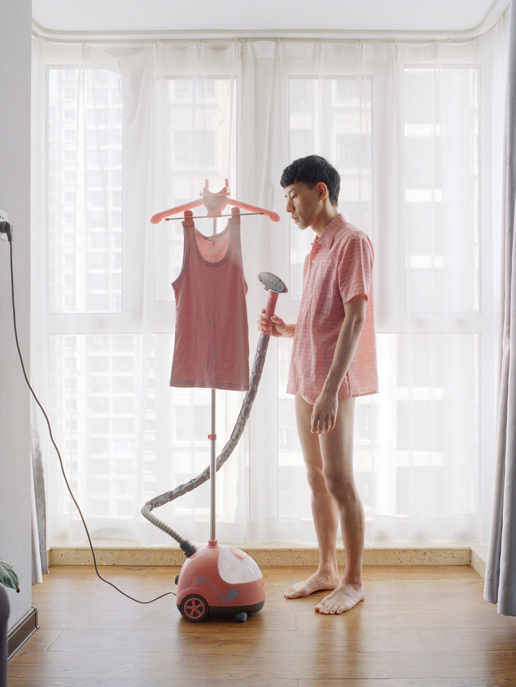
➤ 木牙MUYA: 在Pixy大部分的作品中，裸露一部分身体占据了很大的一个比例。对于Pixy来说这具有什么样的意义？又给作品本身赋予了什么呢？
In most of Pixy's works, a large proportion of the body is exposed. What does this mean to Pixy? What does it give to work itself?
Pixy Liao: 对于我来说，裸体和衣着都是一样的，都是一种选择。在选择穿着的时候，该选什么颜色、什么服装风格，每一种选择都给照片带来新的一层意义。但是裸体就没有这种顾虑，没有添加的照片元素，它是我们与生俱来的服装。当然我也很注意不在照片中显露过多的部分，因为过多的裸体会产生色情的意味，那就又是一层我所不需要的含义在照片里了。
For me, nudity is the same as dressing. It's both a choice. When choosing what color to wear, what style to wear, each option brings a new layer of meaning to the picture. But nudity has no such qualms, no added photo element, and it's our innate clothing. Of course, I was also careful not to show too much in the photo because too much nudity would be pornographic, which would add another layer of meaning to the photo that I didn't need.
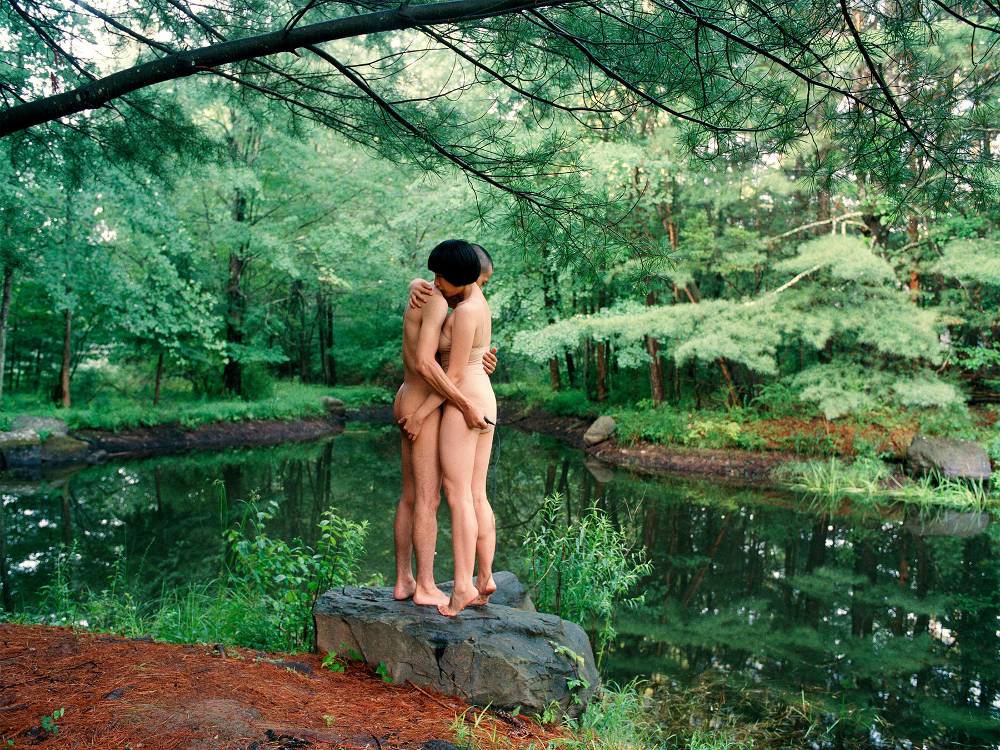
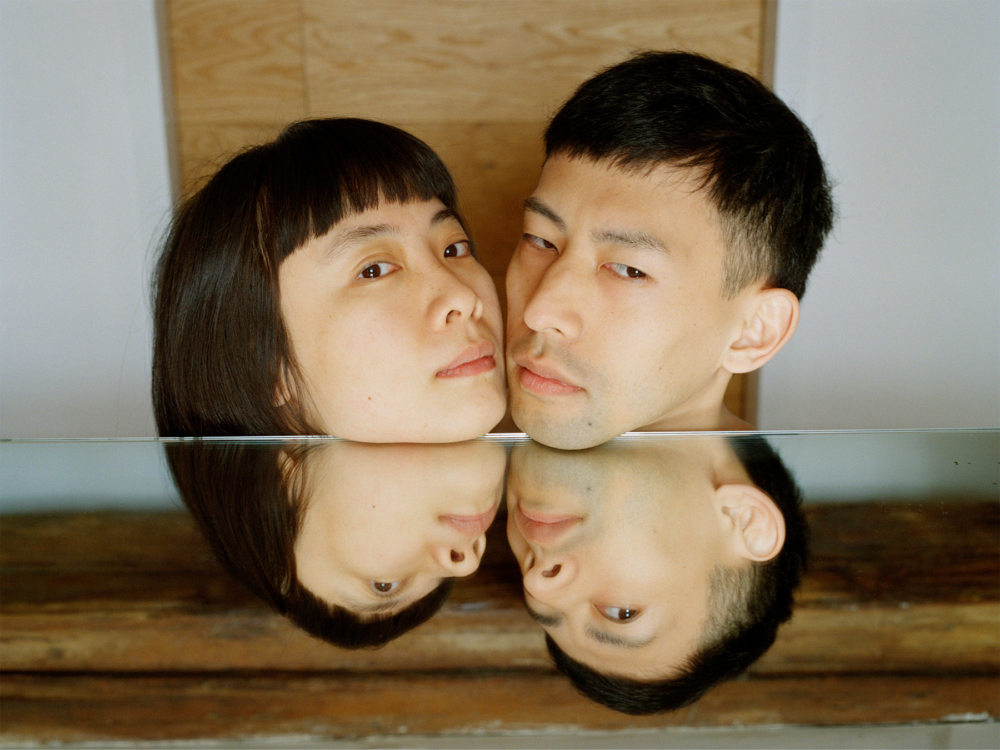
➤ 木牙MUYA: 灵感的来源常常也需要长期的积累。Pixy 在这期间有读哪些有趣的书籍或者看到些有趣的电影吗？可以大概介绍一下吗？哪些让你觉得印象深刻？
The source of inspiration often needs to be accumulated over a long period. Did Pixy read any interesting books or see any interesting movies during this time? Can you give me a general introduction? What impressed you?
Pixy Liao:最近买了一本大都会博物馆出的关于哈特谢普苏特图册，她是埃及最著名的女法老。我一直对考古学和埃及文化很感兴趣，而且我这几年一直在研究历史上真实存在的女性统治者，最近正好看到这本书打折就买了。书中有很多和这位女法老相关的文物图片，最有意思的是她在不同时期的雕像中有时显示有时又掩饰她的性别特征。
I recently bought a Metropolitan Museum atlases on Hatshepsut, Egypt's most famous female pharaoh. I've always been interested in archaeology and Egyptian culture, and I recently purchased this book on sale after studying real women rulers in history for several years. There are many images of the female pharaoh, which is that her gender is sometimes revealed and sometimes disguised in statues from different periods.
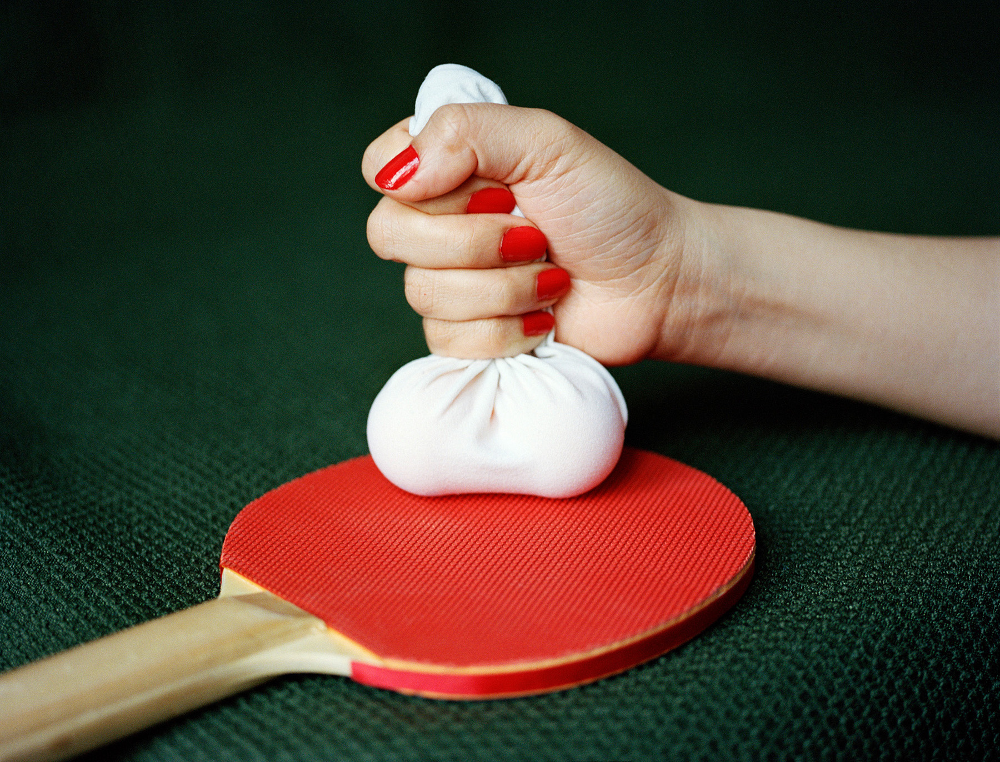
➤ 木牙MUYA: 如果有人询问，Pixy是如何和周围的人解释自己的工作或者说专业的呢？
How does Pixy explain her work or profession to the people around her?
Pixy Liao: 不解释啊，就是不上班吧。。。。。。。。。。。。。😂😂
No explanation, just haven't got a job…………………………………… 😂😂
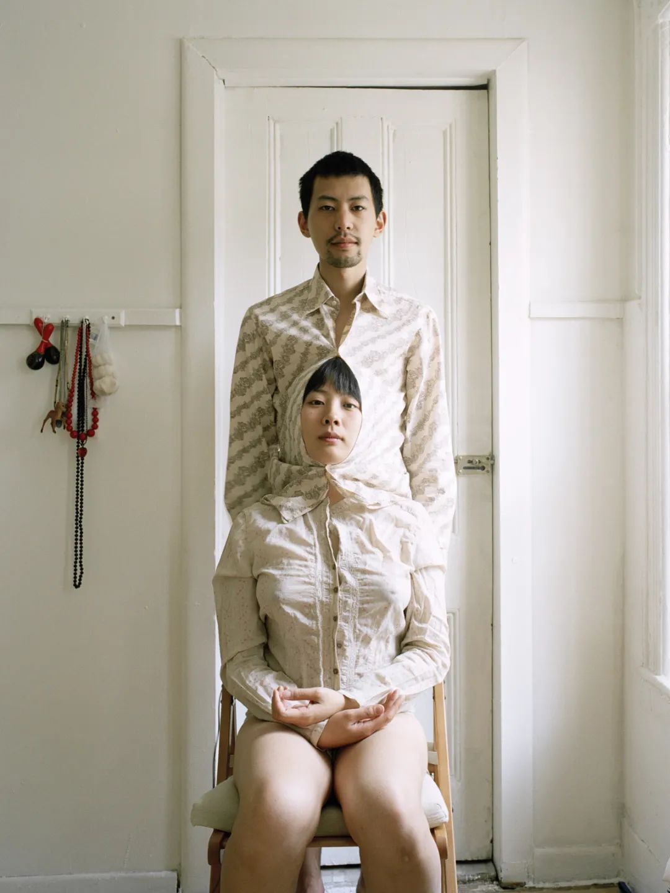

✯ Which inspire your works most ✯
“I open myself to extreme possibilities. ”
木牙微信订阅号